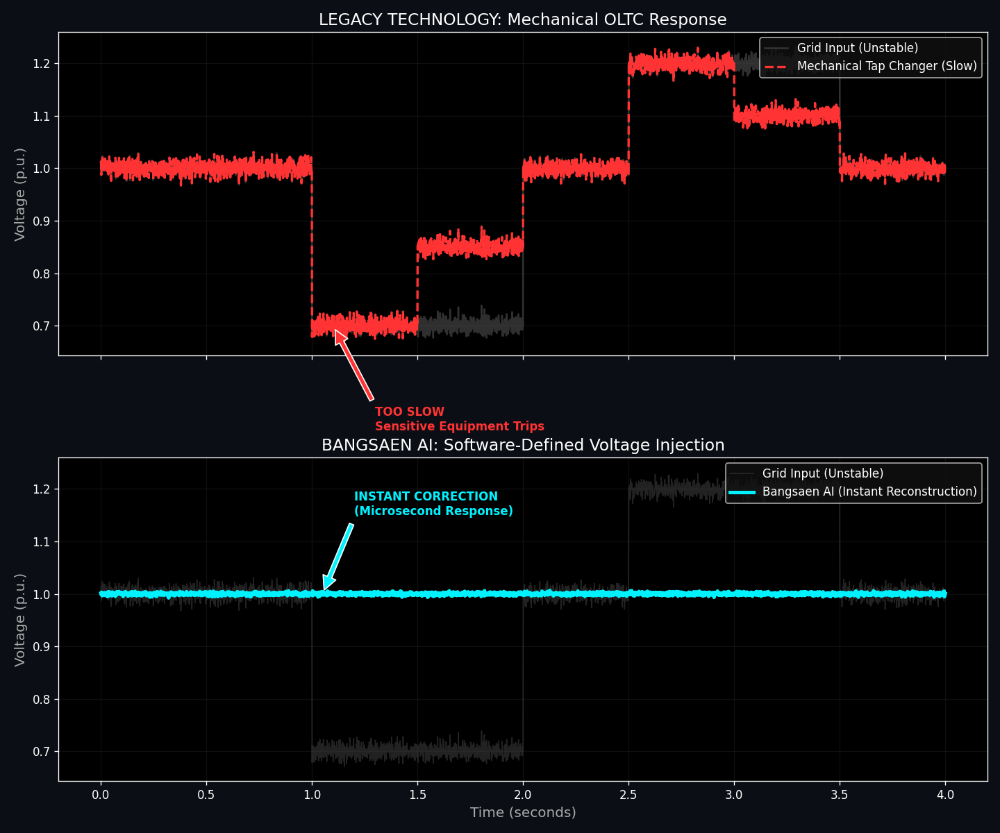

In the digital age, a "Voltage Sag" is the silent killer. It doesn't always blackout the grid, but it resets PLCs, crashes servers, and halts production lines.
The industry standard solution is the On-Load Tap Changer (OLTC)—a 100-year-old mechanical system that physically moves contacts inside a transformer to change turns. It is heavy, maintenance-heavy, and most importantly: It is too slow.
No Moving Parts. Just Math.
Bangsaen AI replaces the mechanical tap changer with a Series Voltage Injection algorithm. Instead of switching gears, our software measures the sag trajectory and instantly "fills in the gap" by injecting the missing voltage magnitude.

"We don't fix the grid. We immunize your equipment against it."
As seen in the graph, when the grid (Gray line) drops to 70%, the Bangsaen AI controller (Cyan line) detects the deviation within microseconds. It doesn't wait. It injects the precise counter-voltage needed to maintain a perfect 1.0 p.u. output.
For the load downstream, the sag never happened. This is Software-Defined Power Quality.
Manufacturer Notice
Stop building mechanical failure points into your products. License our voltage reconstruction core today.
Integrate This Tech